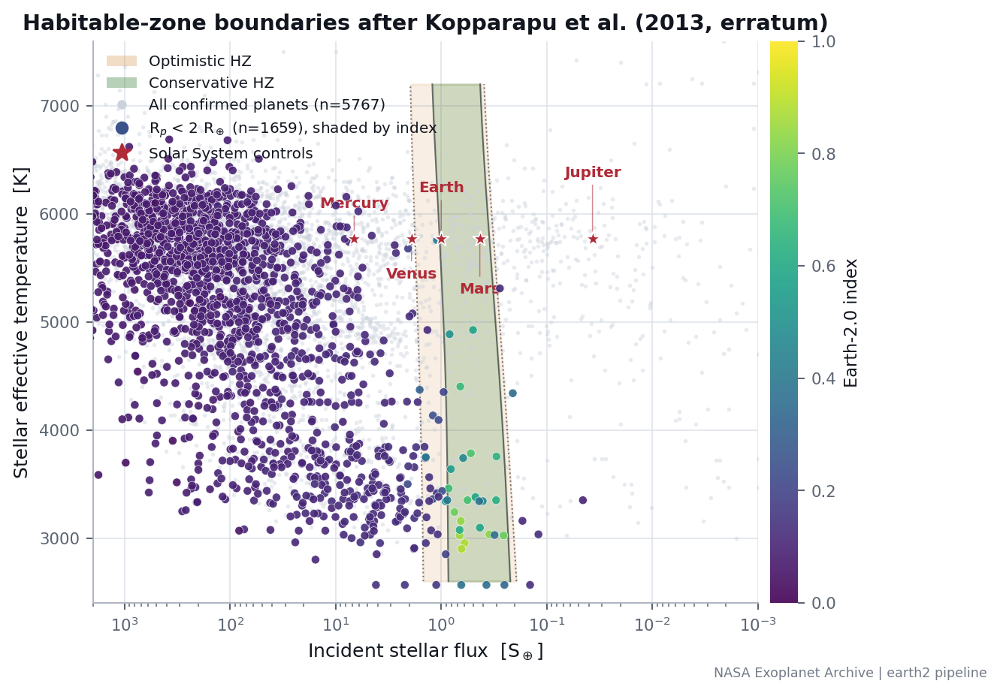
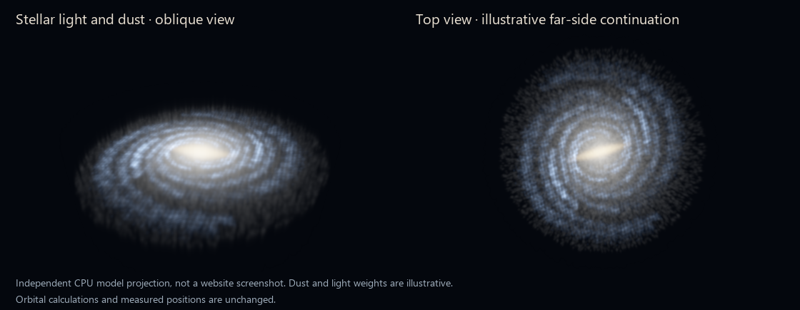

Astropy comparison
SHA-256, LF-normalised text
b24dec520cd212671bee0dc8caba256fe600e9e2f690834ce9d1a4fad8972412Browse 19 versioned evidence files. Table previews simply display stored rows. Consult the project report for the source, processing steps, and inference assumptions.


b24dec520cd212671bee0dc8caba256fe600e9e2f690834ce9d1a4fad89724123e4b7a315af2cfd19510ec6c8ee9578f83e1d9f1a8a57cac1b056da77d0feb18daeb10f232bc964aa6829b596be8850a934c30467651f501fea59184f7d0b805e54f7562f9d8003e0784122231f1937ebfe4af30e549096244649b4958e519425ebebf9e441ba5e7808b1a7a35a6abfa460ff03c1695d9a8fa70c62d3c701cde444ba74e79f2cac35a56aff00054f05b0c75b1551b32c7db5092880e395d25d139879cc9df12e063658d94ea1857881d111070a42c85bdaedb98a6ed82f0faec0d48f25f10da2a6cc3e44113d7e03fb643d86cac0924bec90b1e1c2db2fd4cf33949c3c3be80c19c0220dbd00f89f6cdfb31ecccd1e9fb6e2401beadbc4edf471354250228f0fde5e0776a4e5f690baeaa7a649f6d16af9ae39c03f403498ca2| source_id | ra | dec | parallax | pmra | pmdec | radial_velocity |
|---|---|---|---|---|---|---|
| 630505494719360 | 46.613135424105224 | 1.961063920576691 | 67.9335016849359 | 389.253050210783 | -925.0262599814663 | -31.353418 |
| 769456276704128 | 47.51489911594037 | 2.572769511017299 | 53.084367738704444 | 180.20093187991495 | -320.7204528643748 | -51.70547 |
| 4267552520347776 | 47.56392170930795 | 5.90623884657126 | 55.240631750607875 | -122.2030270613495 | -563.343416515233 | -5.684577 |
| 14912165107085184 | 47.251989727646745 | 10.021186116181132 | 79.45324543622554 | 286.34308194709666 | -586.2967992412398 | -29.26276 |
d4048ebdb08ffcad8795b39726690c267f9fcd92055d18d268a31cceca745d08f5c971af11bd85eeb0b08be617257e83f567686cefb6821961559dc0d09cfe4f0766c95f6317acdccebe519d004e57d939c6b08b294cc8bd7668aee233da6dc0ce5e5a414b916f869f5c772a679b88c92d6ef6d40633afa316a8392f8d8c0671d02a1e9829415664422ec514c0353dc1aa0c22a77f891d11444e582296453280aafef76121293d19e7ed1d259e20945ba8c1ad85ad4bc65d5ee95138f526e8de4177ae81fd07c30f215159e8d974b974e4dfe6f23b84b222ca5a541d6cd64607a3fd807ef640aef9d23ebbdce98c18e8bb1c521caa7edfcf1aa1bfbf4a5522dbe291b82b67e982e3f8ebd3b8d7c40e33f42bdfe9d0c6d0bbd5a8e3505bef88b5SHA-256 values verify the stored files. They do not independently validate the scientific analysis. Rebuild this page with python scripts/evidence_catalog.py followed by python scripts/render_evidence_page.py.